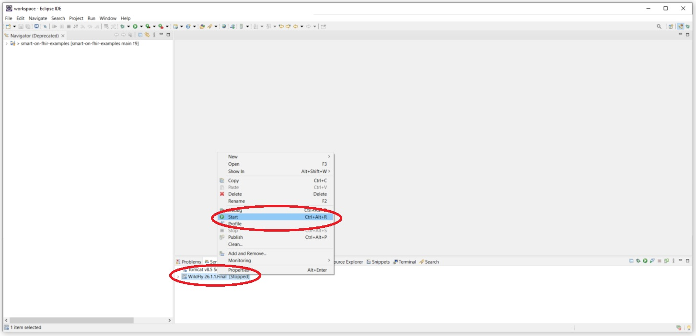
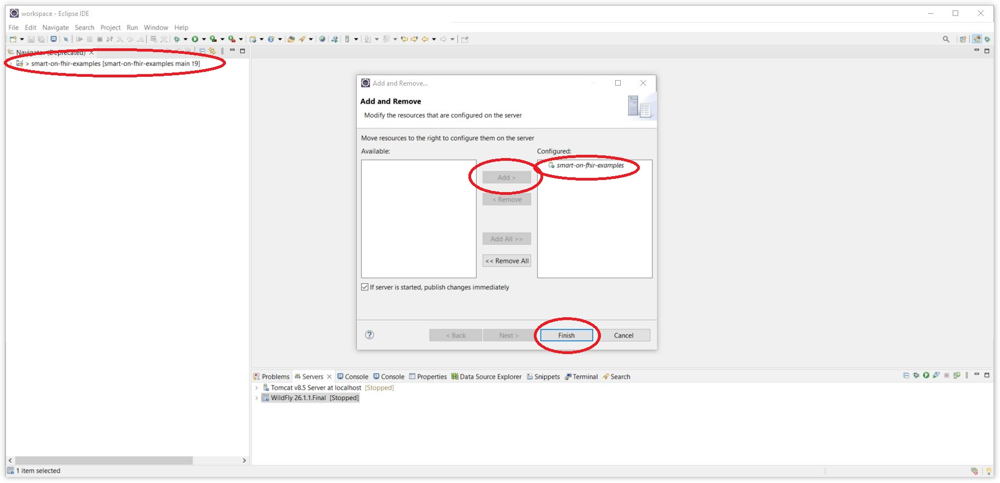
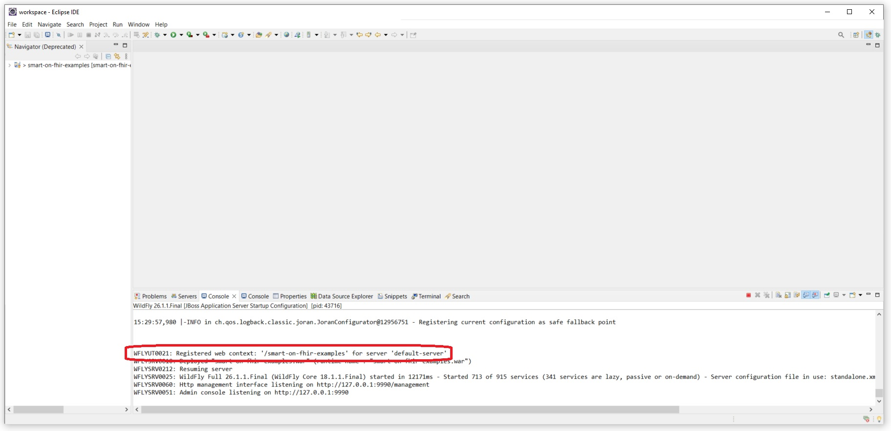
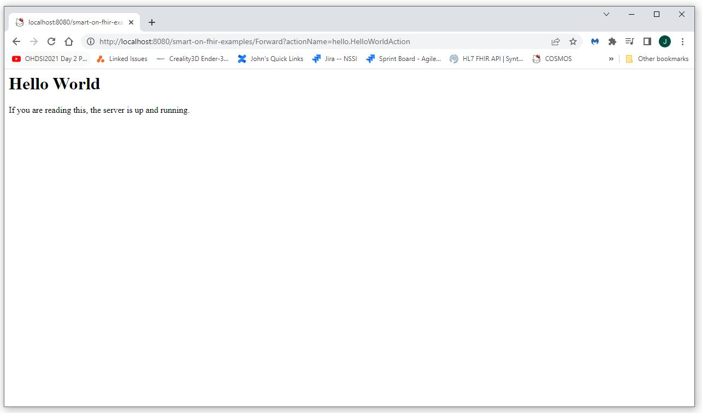
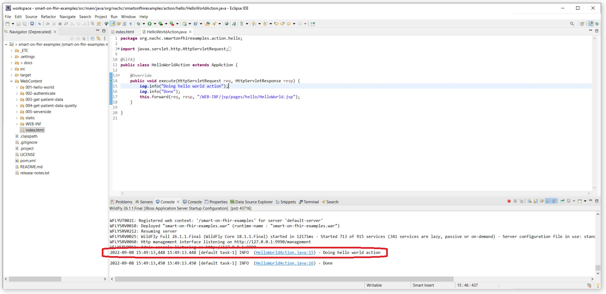
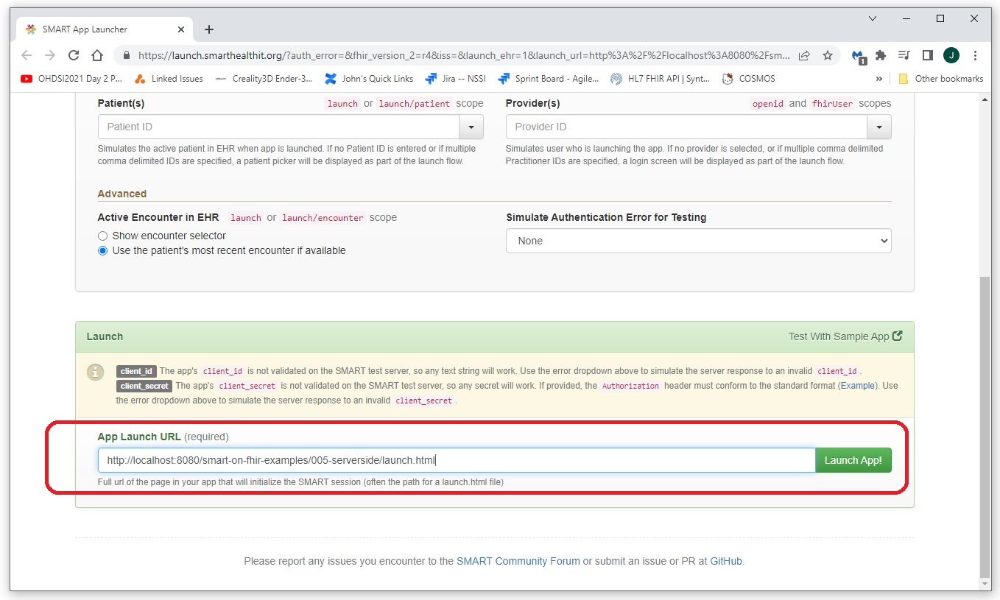
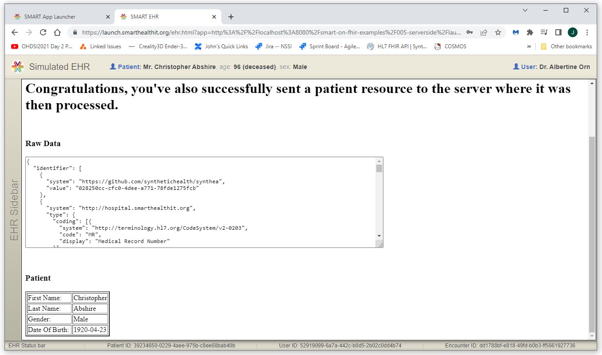
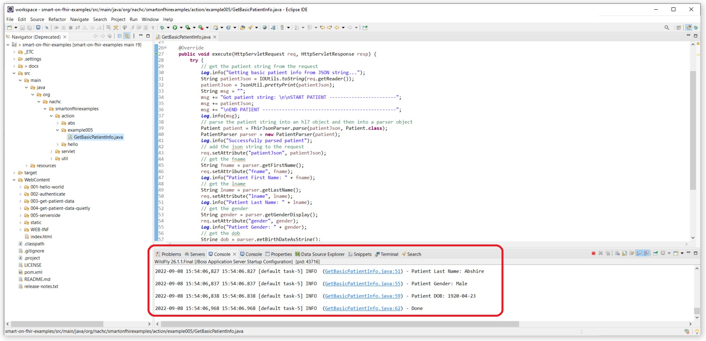

SMART on FHIR Examples: 005-serverside
A Simple Application to Show How to User Server Side Processing in a
SMART on FHIR Application
Introduction
This SMART on FHIR application demonstrates how to pass SMART on FHIR to a server application for processing
and then return a response to the SMART on FHIR application running inside the EMR.
This example focuses on the serverside code and does not walk through the process to deploy the application seen in the previous examples.
For an explaination of how to deploy the application, see one of the previous examples.
To run this example you will need to deploy the smart-on-fhir-examples application to a Java enabled server.
For the example we use an instance of Wildfly running in Eclipse.
We have made available a complete installation of the development environment we use in this example here:
https://nachc-cad.github.io/fhir-to-omop/pages/navbar/how-tos/developer-how-tos/install-eclipse/InstallEclipse.html.
Instructions on how to deploy a web application in this environment are here:
https://nachc-cad.github.io/fhir-to-omop/pages/navbar/how-tos/developer-how-tos/install-eclipse/debug-web-application/DebugWebApplication.html
Deploying the Application to a Web Server Example (Wildfly in Eclipse)
To deploy the application to a web server, download the smart-on-fhir-examples application from github
here
using clone as shown below.
git clone https://github.com/NACHC-CAD/smart-on-fhir-examples
Launch Eclipse, import the application using "Import Existing Maven Project".
Start the server by selecting the Server tab, right click on the server, and select "Add" as shown below.

Add the smart-on-fhir-examples application to the server as shown below.

Start the server by selecting the server, right click, and select "Start" (or "Start in Debug").
Note that there should be output indicating that the smart-on-fhir-examples application has been deployed.

You can then confirm that the application is running by navigating to this url:
http://localhost:8080/smart-on-fhir-examples/Forward?actionName=hello.HelloWorldAction.
If the application has been successfully deployed and the server is up and running, you should see something like what is shown below.

After visiting the
Hello World page, you should see server output similar to what is shown below.
Note the server output at the bottom of the screen.
You can click the link in the server output and Eclipse will open up the class that generated the output at the line that generated the output.

You are now ready to launch the server side application from an EMR or EMR sandbox.
We can launch the server side application from the SmartHealthIt sandbox.
Navigate to the SMART App Launcher at
https://launch.smarthealthit.org/.
Scroll to the bottom of the page and paste in the url below and then click the "Launch App" button.
http://localhost:8080/smart-on-fhir-examples/005-serverside/launch.html

The application should launch and display a page similar to what is shown below.

We can then see the output from the server side processing in Eclipse as shown below.
Note again that the output includes links to where the logging was generated.
These links can be used to get to the code processed the SMART on FHIR resource and forwarded the user to the appropriate page.
